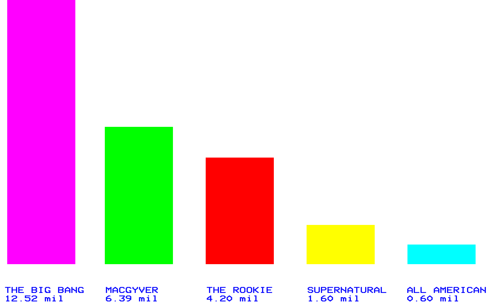

With the Oxford English Dictionary adding the phrases 'binge-watch' and 'spoiler alert' to its repertoire in June 2018, it's clear that the television landscape is transforming.
To understand exactly how, we have to go back to the very basics. Since its inception, Television has existed with one simple goal in mind - to sell people products. The first television commercial aired on June 1st, 1941 for the Bulova Watch Co. The 10-second commercial reportedly cost $9 at the time, which is around $500 adjusted for inflation; this is a bargain by today's standards. In recent years, some companies have paid upwards of $5 million for advertisements during the annual US Super Bowl sporting event - paying for the privilege of promoting their product to an audience of around 100 million.
Television is still mostly consumed on a linear basis. Linear programming (the idea of watching a show live, as it airs) in the United States is consumed on one of the 'main-five' networks: ABC, CBS, The CW, NBC and Fox. They each have regularly scheduled 'seasons' of shows that viewers watch live, generally in 20 or 45-minute blocks with regular ad breaks. The popularity of these shows isa measured by the Nielsen Research Group.
They track viewers using physical boxes in homes. Nielsen gives boxes out very selectively ensuring limited bias and diverse viewing habits. They then generate a metric referred to as 'ratings' which are broken down by age groups. For ad sales, the most important metric is the 18-49 age group. For ad sales, the most important metric is the 18-49 age group. For example, a recent episode of the Big Bang Theory drew a 2.1 rating (12.52 million live-individual viewers) whilst a recent episode of Supernatural averaged a 0.5 rating (1.53 million), making Ad buys/product placement much more lucrative for the Big Bang Theory.
These five networks each fight for ratings. To do this they launch hot new dramas and reality programming every year in an attempt to best the others. Rating stragglers or low-performing shows are kicked to the wayside or cancelled to make room for new programming. Recently however, the industry has begun to shift to a non-linear programming model.
As the industry evolved, the concept and favoured status of linear programming began to decline. Viewers wanted flexibility, and the introduction of the home Digital Video Recorder--or DVR gave it to them. They were suddenly able to record their favourite content and watch it on their schedule.
However, with the advent of streaming or Video on Demand, true nonlinear programming has been born. Viewers suddenly have access to huge libraries of content available instantly with a click of a mouse or a tap on a screen. They can watch from their couch, bed or on the bus. No longer are they limited by just five broadcast networks, or expensive cable packages--suddenly they have a wealth of original content from an array of streaming services.
A study published by AwesomenessTV (an American production company creating content for teens and preteens) found that 28% of teenagers are spending their free time watching content on Netflix; this compares to only 14% watching live-TV. Increasingly live-TV seems to be outpaced and outmatched by the growth and consumption of streaming services like Netflix and Amazon.
Millennials (adults aged 18-31) are another group that are quickly gaining a reputation for ditching live-TV, with an increasing number becoming 'cord cutters' (people who cut their traditional cable package in favour of streaming services). 20% of 18 to 31-year-olds opt to watch traditional live-TV through services like Hulu or YouTube TV over traditional networking. In 2018, there will be 22.2 million cord cutters ages 18 and older.
It's no wonder, then, that almost every month a new streaming service is reported on or launched. Recent additions include the likes of the recently launched DC Universe, the long rumoured Apple TV and the upcoming Disney Plus.
This essay aims to explore the connection between technology and television's shift towards interactive content. Whether you're watching on a television, your iPad or your phone - is the age of 'Transmedia Storytelling' finally here?